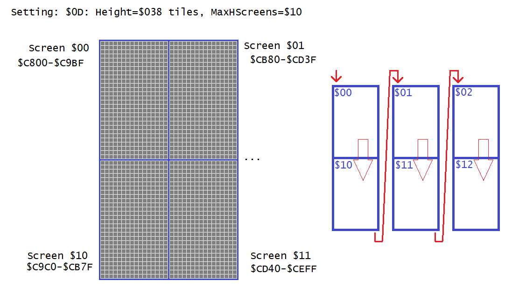
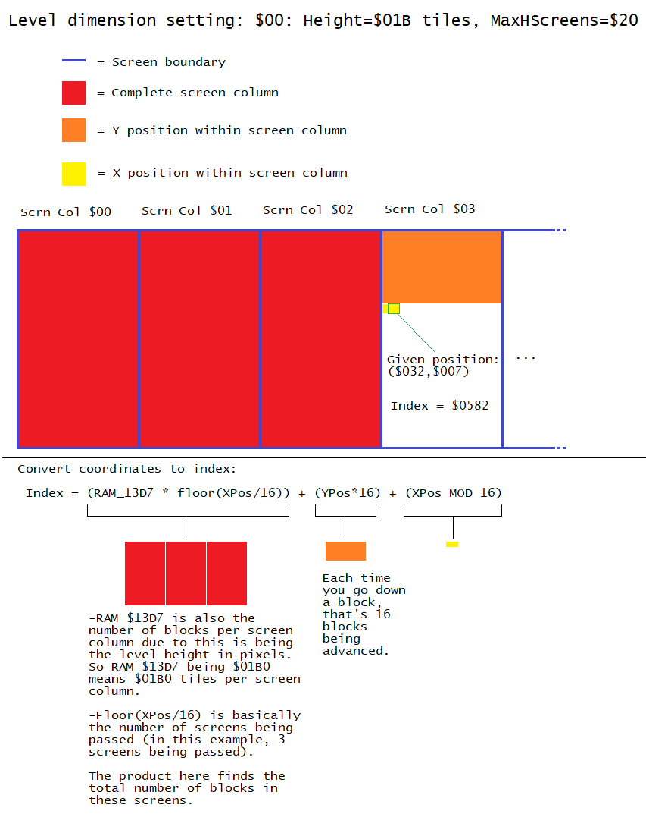

See JS_C800Converter.html to obtain values of which block in the level along with statistics
In SMW, when any level save for boss levels is loaded, the tile data, which keeps track of every tile on how Mario and sprites interact with blocks on layer 1 (or layer 2), are stored in RAM $7EC800 for low byte map16 numbers and $7FC800 for the high bytes.
In a SA-1 game, it would be at address $40C800 and $41C800 instead.
Because the 2 lower bytes (low word, or “page”) of the 24-bit (3-bit) address are the same on different banks (leftmost byte of the 3-byte), I'll be referring the blocks by their page.
When a block is in a level, its map16 number is written on both banks on the same page. For example a cement block, which is tile $0130, placed at the top-left of the level, which is X: $0000, Y: $0000 in block units (not pixels),
would mean $7E/40:C800: $30 and $7F/41:C800: $01. Each byte on both banks correspond to a block, using the same example but at X: $0001, Y: $0000 would cause the cement block to to be written to $C801 of both banks instead.
Therefore they correspond:
|
+0 |
+1 |
+2 |
+3 |
... |
| In banks $7E/$40 |
$C800 (X:$0000,Y:$0000) |
$C801 (X:$0001,Y:$0000) |
$C802 (X:$0002,Y:$0000) |
$C803 (X:$0003,Y:$0000) |
... |
| In banks $7F/$41 |
$C800 (X:$0000,Y:$0000) |
$C801 (X:$0001,Y:$0000) |
$C802 (X:$0002,Y:$0000) |
$C803 (X:$0003,Y:$0000) |
... |
Now you may be wondering, how are the blocks being placed in a two-dimensional array when their data is stored in a linear array? Well, SMW, and by extension, Lunar Magic, stores utilizes a combination of
row and column-major multidimensional array. The format stored in the RAM
differs depending on horizontal level and vertical level. Since LM added custom horizontal level dimensions, that also differs the layout of the blocks.
Notes:
- Coordinates discussed here are in units of blocks, not pixels. To convert pixels to blocks, do BlockXPos = floor(PixelXPos/16) BlockYPos = floor(PixelYPos/16). floor() is a function
that rounds down a number; picking the highest integer less-than or equal to the input.
- As always, X increases going rightwards, and Y increases going downwards. 2D Computer graphics often have the Y-axis orientated downwards, the same way how we read english text.
Horizontal level block format
In horizontal levels, the grid of blocks are divided by 16-block wide “screen columns”, then subdivided those screen columns into many rows of 16x1 block groups.
Let's start with the smallest unit of chunking first, the blocks are ordered like a newspaper:

Now, I used the term “screen columns” for a reason. When enumerating past the last block within the screen exit boundary (the blue-bordered chunks seen in Lunar Magic when “View Screen Exits”) is turned on,
you advance to the top-leftmost block of a screen exit below, rather than the screen exit to the right. If the bottom of the level is reached, then it would be the top screen exit to the right:

Calculating Index <-> Coordinates of horizontal levels
Because the block grid is subdivided this way, here's a visual on how I solved a formula on converting the index and coordinates:

Formula in text form:
- Obtain Index: Index = (BlocksPerScrnCol * floor(XPos/16)) + (YPos*16) + (XPos MOD 16)
- Obtain X and Y positions:
- XPos = (floor(BlockIndex/BlocksPerScreenColumn)*16) + (Index MOD 16)
- YPos = floor((BlockIndex MOD BlocksPerScreenColumn)/16)
Notes:
-
RAM $13D7 ($73D7 in SA-1) is the level height in pixels, because of powers of 2 and every screen column in horizontal levels are always 16 blocks wide, this is also
the number of blocks per screen column.
-
Mod is the modulo operator, the remainder of dividing two numbers. For example: 18/16, in Euclidean Division, is quotient = 1, remainder = 2. therefore
18 MOD 16 will output 2.
Vertical level block format
Vertical levels are formatted like this: The grid is divided into 32x16-block screen exits, then they are subdivided by the 2 16x16 sub-screen areas (left and right half of the screen exit), and finally subdivided again by 16x1 areas:

When enumerating past the last block in a screen exit, it repeats on the next screen exit down:

Calculating Index <-> Coordinates of horizontal levels

Similar to horizontal levels, but because there are no dimension settings for vertical levels, the task is much easier, and even more so thanks to the fact that each screen's width and height and the number of blocks are all powers of 2, making easy use of bitwise operations.
In fact, the index in binary is %00YYYYYXyyyyxxxx, where uppercase X and Y represents what screen boundary and what halves (X = 0 for left and 1 for right) within a screen boundary.
Formulas:
- To calculate index: Index = (512 * floor(YPos/16)) + (256 * floor(XPos/16)) + ((YPos MOD 16)*16) + (XPos MOD 16)
- To calculate coordinates:
- XPos = (floor((BlockIndex MOD 512)/256)*16) + (BlockIndex MOD 16)
- YPos = (floor(BlockIndex/512)*16) + (floor(BlockIndex/16) MOD 16)